Chapter 2 Describing Data
Once data have been collected, they are typically described via graphical and numeric means. The methods used to describe the data will depend on its type (nominal, ordinal, or numeric). We also need to distinguish whether the data corresponds to a sample or a population. In this chapter, we focus purely on describing a set of measurements, not making inferences. First we consider graphical and numeric descriptions of a single variable. Then we consider pairs of variables.
2.1 Graphical Description of a Single Variable
Depending on the type of measurement, common plots are pie charts, bar charts, histograms, box plots, and density plots.
Pie charts can be used to describe any variable type. Continuous numeric variables must be collapsed into “bins” or “buckets.” The size of the sectors of the pie represent the relative frequency of each category.
Bar charts are used to describe nominal or ordinal data. The variable levels are arrayed on the bottom (or left side) of the plot and bars above (or beside) the levels represent the frequency or relative frequency of the number of observations belonging to the various categories.
Histograms are used for numeric variables, where the heights of the bars above the bins represent the frequency or relative frequency of the various bins.
Box plots are used for numeric variables. They identify particular percentiles of a distribution and are useful in detecting outlying observations and spread in the distribution.
Density plots are used for numeric variables. They offer a smoother description of the measurements than a histogram does and are simple to obtain with modern statistical software packages.
Example 2.1: Hand Postures of Blues Guitarists
A study was conducted among \(n=93\) blues guitarists that classified the guitarists with respect to several categorical variables (Cohen 1996). Among the variables was “hand posture,” with levels: Extended, Stacked, and Lutiform. Figure 2.1 is a pie chart representing the proportions of guitarists classified in the three hand posture categories. Figure 2.2 displays a bar chart of the same data.
## name state brthYr post1906 region handPost thumbSty
## 1 Henry Thomas TX 1874 0 3 1 3
## 2 Frank Stokes TN 1887 0 2 1 3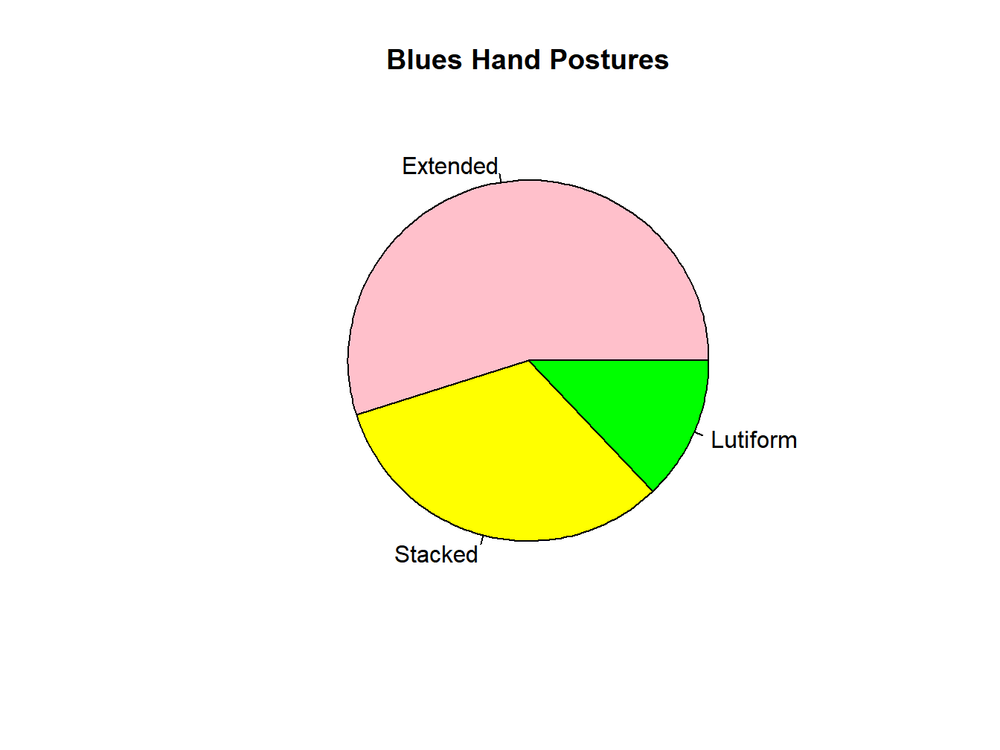
Figure 2.1: Pie chart of Hand Postures for \(n\)=93 blues guitarists
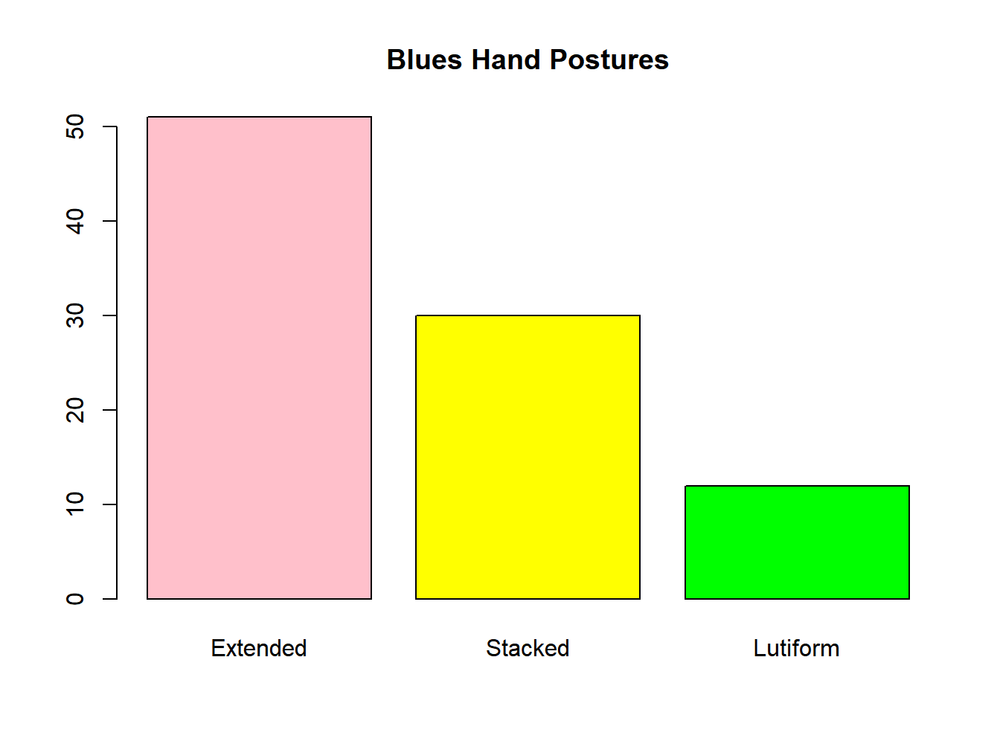
Figure 2.2: Bar chart of Hand Postures for \(n\)=93 blues guitarists
We see that over half of the guitarists utilized the extended hand posture, approximately a third, used the stacked, and the remaining approximately a ninth used the lutiform.
\[\nabla\]
Example 2.2: Measurements of the Velocity of Light circa 1931-1933
A.A. Michelson, F.G. Pease, and F. Pearson set up an approximately one mile long tube to make determinations of the speed of light near Irvine, CA in the early 1930s (Michelson, Pease, and Pearson 1935). Without getting into the very detailed description given in the paper, we have 1010 determinations of the velocity of light after having removed some runs with anomalous values in the table. Further, we do not include weights that varied due to the experimental protocol as it evolved during the data collection process. Figure 2.3 provides a histogram of the \(n=1010\) measurements (approximated from their tabular information) as well as a smooth density function overlay on the graph. The values on the graph represent velocity - 299000 km/sec. The individual measurements are mound shaped around a center point with arithmetic mean of 299773.5 km/sec. Modern assessments of the velocity of light in a vacuum is 299792.5 km/sec.
## Series Year Mean e velocity n weight serTotWt SeriesGrp
## 1 1 1931 792 8 799.5 2 1 2 1
## 2 1 1931 792 -7 784.5 2 1 2 1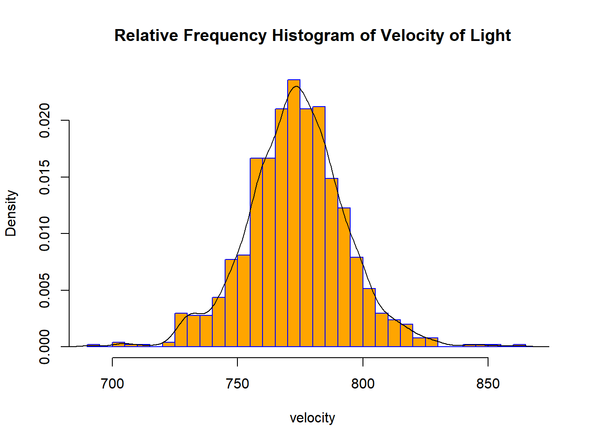
Figure 2.3: Michelson Speed of Light Measurements (Deviations from 299000 km/sec)
Measurements were made in 4 groups of series: Series 1-54 (2/16/1931-7/14/1931), Series 55-110 (3/3/1932-5/13/1932), Series 111-158 (5/13/1932-8/4/1932), and Series 159-233 (12/3/1932-2/27/1933). Side-by-side box plots are given in Figure 2.4. The box plot identifies from bottom to top the following elements.
- Minimum: Bottom of line at bottom of plot (or the lowest circle)
- Range for lowest 25% of measurements: Distance from minimum observation to the bottom of the box
- 25th percentile (Lower Quartile, aka LQ): Bottom line of box
- Range for the 25th to 50th percent of participants: Distance between bottom of box and second horizontal line
- Median (50th percentile): Second horizontal line
- Range for the 50th to 75th percent of participants: Distance between second horizontal line and top of box
- Interquartile Range (IQR): Distance between top (75th percentile) and bottom (25th percentile) of the box
- 75th percentile (Upper Quartile, UQ): Top line of the box
- Range for 75th to 100th percent of participants: Distance from the top of the box to the maximum observation
- Maximum: Top of line at the top of plot (or the highest circle)
- Lower line extends either to the minimum or 1.5(IQR) below the LQ, whichever is shortest.
- Upper line extends either to the maximum or 1.5(IQR) above the UQ, whichever is shortest.
- Circles represent outlying measurements (very extreme measurements).
The precision of the measurements tend to improve slightly over the course of the study. Note that the average weights for the individual measurements included in this analysis were approximately 1.65 for the first series and approximately 3 for the remaining series.
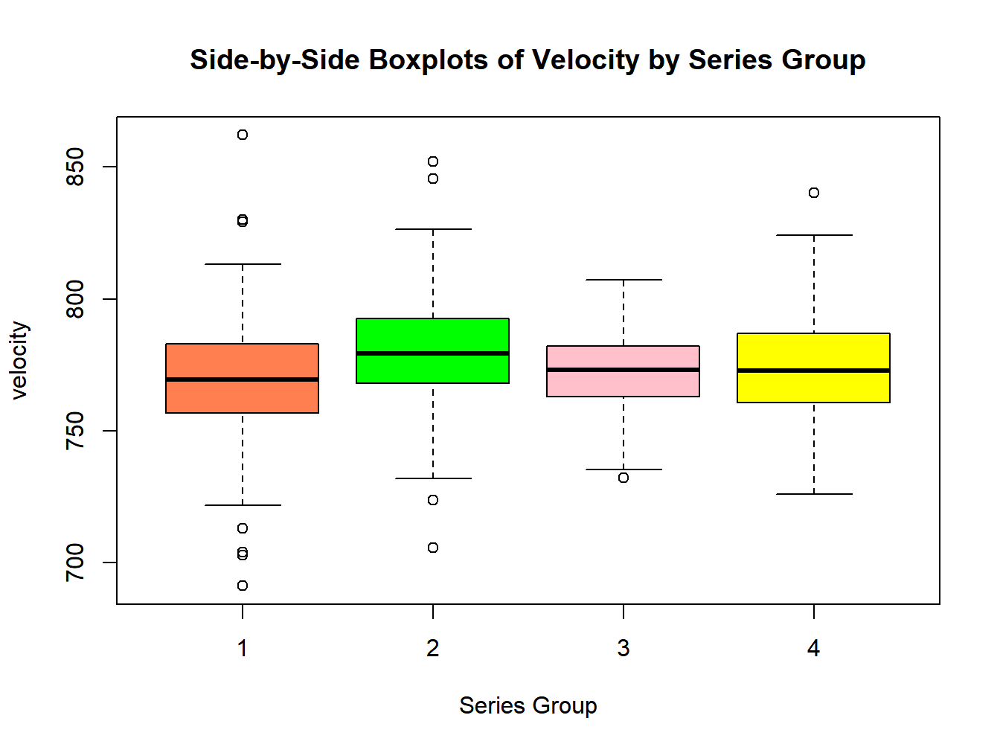
Figure 2.4: Side-by-side boxplots for velocities measured in the 4 groups of series
\[ \nabla \]
Example 2.3: Body Mass Index for National Hockey League Players - 2014/2015 Season
Body mass index (BMI) is a measure of body fat that is based on the the work of Adolphe Quetelet, a renowned Belgian researcher in astronomy and statistics and other areas, particularly social sciences. The formulas for BMI in the metric and American systems are given below.
\[ BMI = \mbox{mass(kg)/height(m)}^2 = \mbox{703$\times$mass(lbs)/height(in)}^2 \]
Data for all National Hockey League (NHL) players are obtained, reported in pounds (lbs) and inches, respectively. A histogram is given in Figure 2.5. The histogram is approximately symmetric and mound-shaped, centered above 26.
\[ \nabla \]
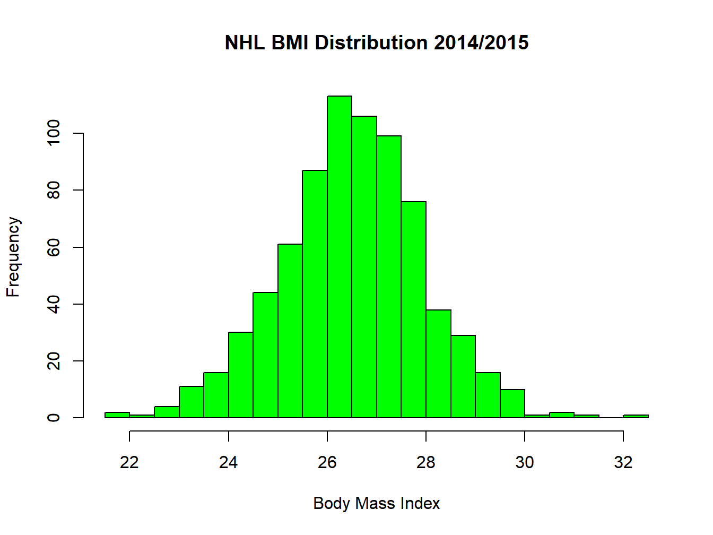
Figure 2.5: Body Mass Index for NHL Players 2014/2015 Season
Example 2.4: Female and Male Speeds at Washington, DC Rock and Roll Marathon - 2015
The 2015 Rock and Roll Marathon in Washington, D.C. was completed by 1045 female and 1454 male participants. Each participant’s time to complete the marathon was converted to a speed (miles per hour). Histograms and kernel density plots for females and males are given in Figure 2.6, and side-by-side box plots are given in Figure 2.7. For both genders, there tend to be more cases at lower speeds with a few extreme cases with higher speeds. These distributions are right-skewed.
A smooth version of a boxplot, which does not separate the measurements into quantiles is a violin plot. For the marathon data, one is displayed in Figure 2.8.
## Runner Gender Place Seconds mph
## 1 1 M 1830 17375 5.432374
## 2 2 F 2475 20988 4.497213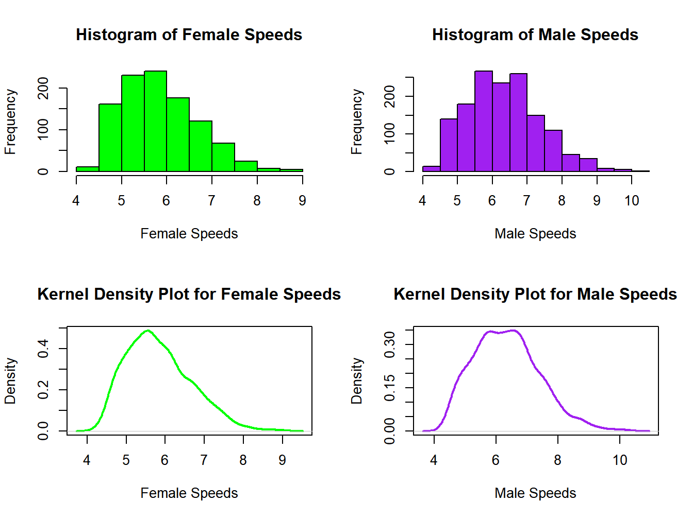
Figure 2.6: Histograms and Densities of Velocities at Rock and Roll Marathon 2015 (mph)
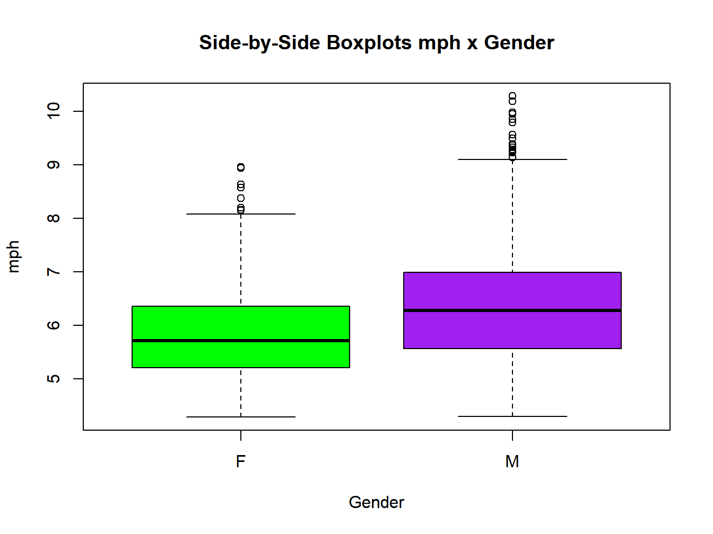
Figure 2.7: Box Plots of Velocities at Rock and Roll Marathon 2015 (mph)
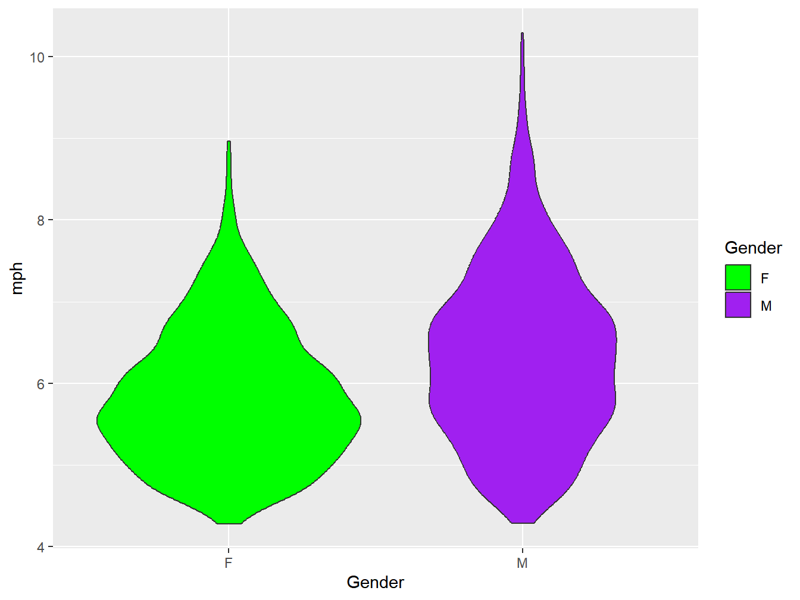
Figure 2.8: Violin Plots of Velocities at Rock and Roll Marathon 2015 (mph)
\[ \nabla \] Time series plots are widely used in many areas including economics, finance, climatology, and biology. These graphs include one or more characteristics being observed in a sequential time order. These plots can be based on virtually any level of sampling interval.
Example 2.5: Miami Monthly and Annual Mean Temperature 1/1949-12/2014
They can be used to detect trend and cyclical patterns over time. Figure 2.9 shows the the monthly and annual mean temperature in Miami for the years 1949 through 2014. Clearly there is a cyclical pattern occurring within years, and after a flat early annual series, there certainly appears to be evidence of an increasing trend over approximately the second half of the series (after about 1970).
## Month Year LowTemp HighTemp WarmestMin ColdestHigh AveMin AveMax meanTemp
## 1 1 1949 39 84 70 61 61.7 78.8 70.2
## 2 2 1949 57 87 72 77 65.2 81.7 73.4
## TotPrecip TotSnow Max24hrPrecip Max24hrSnow
## 1 0.11 0 0.06 0
## 2 0.37 0 0.36 0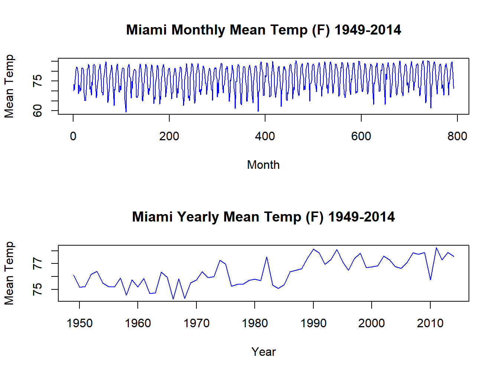
Figure 2.9: Miami Monthly and Annual Temperatures 1949-2014
\[ \nabla \]
2.2 Numerical Descriptive Measures of a Single Variable
Numerical descriptive measures describe a set of measurements in quantitative terms. When describing a population of measurements, they are referred to as parameters; when describing a sample of data, they are referred to as statistics.
In terms of nominal and ordinal data, proportions are generally the numeric measures of interest. These are simply the fraction of measurements falling into the various possible levels (and must sum to 1). For ordinal variables, the cumulative proportions are also of interest, representing the fraction of measurements falling in or below the various categories.
2.2.1 Measures of Central Tendency
There are two commonly reported measures of central tendency, or location for a set of measurements. The mean is the sum of all measurements divided by the number of measurements, and is reported often as “per capita” in economic reports. The mean is the”balance point” of a set of measurements in a physical sense. The median is the point where half of the measurements fall at or below it, and half of the measurements fall at or above it. It is also the 50th percentile of the set of measurements. Many economic reports state median values. A third, less reported measure is the mode which really is only appropriate for discrete variables, and is the value that occurs most often. For a histogram of discretely measured data, the mode is the level with the highest bar.
Note that the mean is affected by outlying measurements, as it is the sum of all measurements, evenly distributed among all of the measurements. The median is more “robust” as it is not effected by the actual values of individual measurements, only the center of them. The formulas for the population mean \(\mu\), based on a population of \(N\) items and the sample mean \(\overline{y}\) for a sample of \(n\) items are given below.
\[ \mbox{Population Mean: } \mu = \frac{\sum_{i=1}^N y_i}{N} \qquad \qquad \mbox{Sample Mean: } \overline{y} = \frac{\sum_{i=1}^n y_i}{n} \]
To obtain the median, measurements are ordered from smallest to largest, and the middle observation (odd population/sample size) or the average of the middle two observations (even population/sample size) are identified. We will denote \(M\) as the population median and \(m\) as the sample median.
Example2.6: NHL BMI’s and Rock and Roll Marathon Speeds
Using the length, sum, mean and median functions in R, we obtain \(N\), \(\sum_{i=1}^Ny_i\), \(\mu\), and the medians for NHL BMI’s in Table 2.1 and marathon speeds by gender for the Rock and Roll marathon in Table 2.2.
| \(N\) | \(\sum_iy_i\) | \(\mu\) | \(M\) | |
|---|---|---|---|---|
| NHL BMI | 748 | 19832.32 | 26.514 | 26.542 |
## Runner Gender Place Seconds mph
## 1 1 M 1830 17375 5.432374
## 2 2 F 2475 20988 4.497213| \(N\) | \(\sum_iy_i\) | \(\mu\) | \(M\) | |
|---|---|---|---|---|
| Females | 1045 | 6102.632 | 5.840 | 5.711 |
| Males | 1454 | 9213.968 | 6.337 | 6.277 |
Note that the mean (26.514) and median (26.542) of NHL BMI values are very close, as is expected for an (approximately) symmetric distribution.
For the marathon speeds, we use the obtain the means and medians directly by gender.
The marathon velocity distributions are skewed-right, with a few very fast runners in each gender. This causes the means (F=5.84, M=6.37) to be larger than the medians (F=5.71, M=6.28).
\[ \nabla \]
Example 2.7: James Short’s Measurements of the Sun’s Parallax
The parallax is defined as (Merriam-Webster Dictionary):
“the apparent displacement or the difference in apparent direction of an object as seen from two different points not on a straight line with the object. especially : the angular difference in direction of a celestial body as measured from two points on the earth’s orbit.”
James Short reported \(n=158\) measurements of the parallax of the sun in seconds of a degree (Short 1763), also reported in (Stigler 1977). The summary calculations are given in Table 2.3. The true value has since been determined to be 8.798.
A histogram of the data, the true value, and sample mean, as well as a box plot of the measurements are given in Figure 2.10.
## tablepage datcolumn prlxsun
## 1 310 1 8.5
## 2 310 1 8.5| \(n\) | \(\sum_iy_i\) | \(\bar{y}\) | \(m\) | 90% Trim Mean | |
|---|---|---|---|---|---|
| Parallax Measurements | 158 | 1360.31 | 8.6096 | 8.55 | 8.5944 |
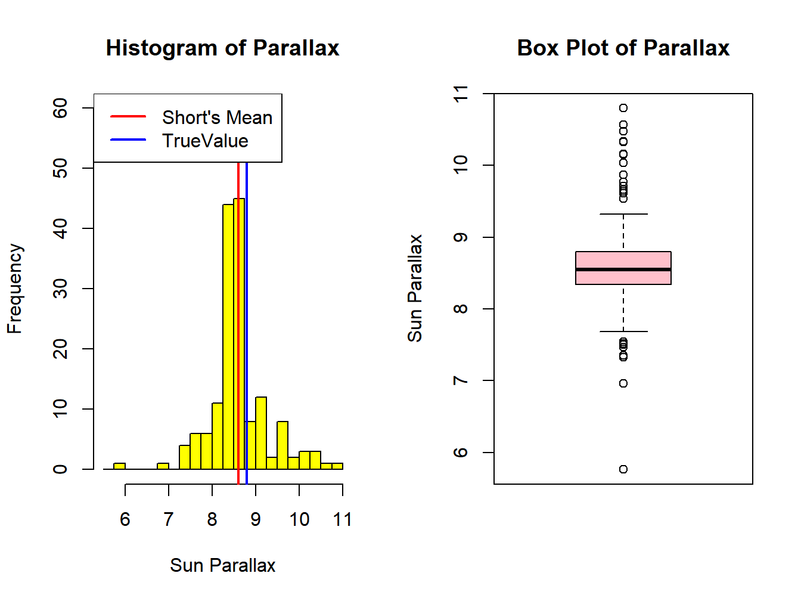
Figure 2.10: James Short Measurements of the Parallax of the Sun
\[ \nabla \]
Outliers are observations that lie “far” away from the others. These may be data that have been entered erroneously or just individual cases that are quite different from others. As stated above, means can be affected by outliers, while medians generally are not. A measure of the mean that is not affected by outliers is the trimmed mean. This is the mean of observations in the “middle” of the measurements. For instance, a 90% trimmed mean is the mean of the middle 90% of the ordered measurements (removing the smallest 5% and largest 5%).
Note that the Short parallax data has some extreme outliers in the box plot. The 90% trimmed mean is 8.594 (see above output, where we have trimmed 5% in each tail) which is not far from the sample mean as the data are still fairly symmetric despite the outliers.
2.2.2 Measures of Variability
Along with the “location” of a set of measurements, researchers are also interested in their variability (aka dispersion). The range is the distance between the largest and smallest measurements (note that this differs from the standard meaning which would just give the lowest and highest values). The interquartile range (IQR) is the distance between the 75th percentile (3/4 of measurements lie below it) and the 25th percentile (1/4 of the measurements lie below it). That is, the IQR measures the range for the middle half of the ordered measurements.
Measures that are more widely used in making inferences are the variance and its square root, the standard deviation. In terms of measurements, the variance is approximately the average squared distance of the individual measurements from the mean (for a population, it is the average). The formulas for the population and sample variance are given below. Note that unless stated otherwise specifically, software packages are reporting the sample version.
\[ \mbox{Population Variance: } \sigma^2 = \frac{\sum_{i=1}^N\left(y_i-\mu\right)^2}{N} \qquad \qquad \mbox{Sample Variance: } s^2 = \frac{\sum_{i=1}^n\left(y_i-\overline{y}\right)^2}{n-1} \]
The reason for dividing by \(n-1\) in the sample variance is to make the estimator an unbiased estimator for the population variance. That is, when computed across all possible samples, the “average” of the sample variance will be the population variance. The standard deviation is the positive square root of the variance and is in the same units as the measurements. The population standard deviation is denoted as \(\sigma\), the sample standard deviation is denoted as \(s\). For many (but certainly not all) distributions, approximately 2/3 of the measurements lie within one standard deviation of the mean and approximately 19/20 lie within two standard deviations of the mean.
Example 2.8: NHL BMI’s and Rock and Roll Marathon Speeds
We compute the minimum, maximum, range, lower and upper quartiles, and the interquartile range, for NHL BMI’s in Table 2.4.
The means, variances, and standard deviations for the NHL BMI’s and the Rock and Roll marathon speeds by gender are given in Table 2.5, and Table 2.6, respectively. Since we treat each of these as a population, we will make a slight adjustment to R’s “built-in” functions var and sd, which compute the sample versions by default. Also included in the the results are the proportions of measurements lying within 1 and 2 standard deviations of the mean.
| min | max | range | LQ | UQ | IQR | |
|---|---|---|---|---|---|---|
| NHL BMI | 21.568 | 32.004 | 10.436 | 25.62 | 27.473 | 1.852 |
| \(\mu\) | \(\sum(y-\mu)^2\) | \(\sigma^2\) | \(\sigma\) | \(P(\mu\pm\sigma)\) | \(P(\mu\pm2\sigma)\) | |
|---|---|---|---|---|---|---|
| NHL BMI | 26.514 | 1570.124 | 2.099 | 1.449 | 0.694 | 0.948 |
For the marathon speeds, we will simply use the var and sd functions in R, applied separately to Females and Males. As both population sizes exceed 1000, the adjustment for population variances and standard deviations would be very small.
## Runner Gender Place Seconds mph
## 1 1 M 1830 17375 5.432374
## 2 2 F 2475 20988 4.497213| \(\mu\) | \(\sigma^2\) | \(\sigma\) | \(P(\mu \pm \sigma)\) | \(P(\mu \pm 2\sigma)\) | |
|---|---|---|---|---|---|
| Females | 5.840 | 0.691 | 0.831 | 0.662 | 0.964 |
| Males | 6.337 | 1.119 | 1.058 | 0.665 | 0.964 |
Male speeds tend to be higher and more variable than Female speeds. All three distributions have approximately 2/3 of individuals lying with one standard deviation of the mean, and approximately 95% lying within two standard deviations from the mean.
\[ \nabla \]
Example 2.9: James Short’s Measurements of the Sun’s Parallax
We compute the range, interquartile range, variance, and standard deviations for the sample of \(n=158\) sun parallax measurements in Table 2.7.
## tablepage datcolumn prlxsun
## 1 310 1 8.5
## 2 310 1 8.5| \(n\) | \(\bar{y}\) | range | IQR | \(s^2\) | \(s\) | \(P(\bar{y} \pm s)\) | \(P(\bar{y} \pm 2s)\) | |
|---|---|---|---|---|---|---|---|---|
| Parallax | 158 | 8.61 | 5.04 | 0.445 | 0.455 | 0.674 | 0.778 | 0.937 |
The full set of measurements lie within a range of 5.04 seconds of a degree, while the middle 50% lie within a range of 0.445. The variance is 0.455 and the standard deviation (a typical distance from an observation to the mean) is 0.674. Further, approximately 77.8% of measurements lie within one standard deviation and 93.7% lie within two standard deviations of the mean.
\[ \nabla \]
2.3 Describing More than One Variable
So far, we have looked at cases one variable at a time, although the marathon speed data set has two variables: speed and gender. Now we consider describing relationships when two variables are observed on each sampling/experimental unit. These can be extended to more than two variables, but can be harder to visualize. We consider graphical techniques as well as numerical measures. Keep in mind that variable types (nominal, ordinal, and numeric) will dictate which method(s) is (are) appropriate.
When both variables are categorical (nominal or ordinal), two methods of plotting them are stacked bar graphs and cluster bar graphs. For the stacked bar graph, one variable is on the horizontal axis (one slot for each level) and the other variable is displayed within the bars with subcategories for each of its levels. In a cluster (grouped) bar graph, one variable forms “major groupings,” while the second variable is plotted “side-by-side” within the groupings. Both methods are based on results of a contingency table also known as a crosstabulation. These are tables where rows are the levels of one categorical variable, columns are levels of another variable, and numbers within the table are counts of the number of units falling in that cell (combination of variable levels). Often these are converted into proportions either overall (cell probabilities sum to 1), or within rows or columns marginally.
Example 2.10: Thumb Styles of Blues Guitarists by Region and Period
A study reported hand and thumb styles of Blues guitarists as well as the region they were from and when they were born (Cohen 1996). The regions are 1=East, 2=Delta, and 3=Texas. The thumb styles are 1=Alternating, 2=Utility, and 3=Dead. The birth period was labeled post1906 with 0=Born before 1906, 1=Born after 1906. First, the association between region (row) and thumb style (column) is considered, then birth period is added. The crosstabulation is given in Table 2.8. The marginal counts by region and thumb style are given in Table 2.9 and Table 2.10, respectively. The joint proportions are given in Table 2.11. The row proportions of thumb style within region are given in Table 2.12. The column proportions of region within thumb style are given in Table 2.13. Figure 2.11 gives the Stacked and Cluster Bar Graphs.
| Alternating | Utility | Dead | |
|---|---|---|---|
| East | 20 | 8 | 7 |
| Delta | 9 | 19 | 19 |
| Texas | 1 | 2 | 8 |
| Var1 | Freq |
|---|---|
| East | 35 |
| Delta | 47 |
| Texas | 11 |
| Var1 | Freq |
|---|---|
| Alternating | 30 |
| Utility | 29 |
| Dead | 34 |
| Alternating | Utility | Dead | |
|---|---|---|---|
| East | 0.2151 | 0.0860 | 0.0753 |
| Delta | 0.0968 | 0.2043 | 0.2043 |
| Texas | 0.0108 | 0.0215 | 0.0860 |
| Alternating | Utility | Dead | |
|---|---|---|---|
| East | 0.5714 | 0.2286 | 0.2000 |
| Delta | 0.1915 | 0.4043 | 0.4043 |
| Texas | 0.0909 | 0.1818 | 0.7273 |
| Alternating | Utility | Dead | |
|---|---|---|---|
| East | 0.6667 | 0.2759 | 0.2059 |
| Delta | 0.3000 | 0.6552 | 0.5588 |
| Texas | 0.0333 | 0.0690 | 0.2353 |
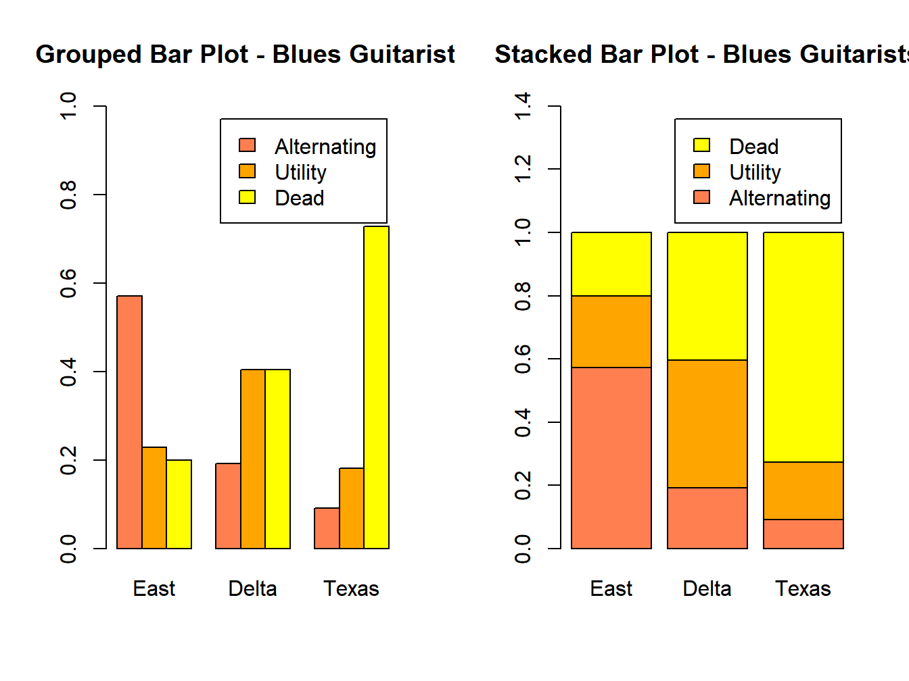
Figure 2.11: Stacked and Cluster Bar Charts for Blues Guitarists
\[ \nabla \] Example 2.11: IMDB User Reviews for 14 Disaster Films
The Internet Movie Database has user reviews for a huge number of films. In this example, we consider the proportion of reviews (from 1-10) for 14 disaster films (Independence Day (I), The Core, Armageddon, Deep Impact, Geostorm, San Andreas, Independence Day (II), 2012, Day After Tomorrow, War of the Worlds, Poseidon, Perfect Storm, Twister (I), and Titanic). A table of the proportions by rating score for the 14 films is given in Table 2.14. A grouped bar chart is given in Figure 2.12 and a stacked bar chart is given in Figure 2.13.
## Movie Movie1 Rating numRate
## 1 Independence Day (1996) ID4.1 1 11267
## 2 The Core Core 1 3570| 1 | 2 | 3 | 4 | 5 | 6 | 7 | 8 | 9 | 10 | |
|---|---|---|---|---|---|---|---|---|---|---|
| ID4.1 | 0.019 | 0.012 | 0.019 | 0.032 | 0.069 | 0.160 | 0.296 | 0.218 | 0.091 | 0.085 |
| Core | 0.034 | 0.035 | 0.064 | 0.113 | 0.209 | 0.243 | 0.163 | 0.074 | 0.026 | 0.040 |
| Armag | 0.025 | 0.018 | 0.026 | 0.045 | 0.092 | 0.188 | 0.262 | 0.176 | 0.078 | 0.090 |
| Deep | 0.015 | 0.015 | 0.028 | 0.062 | 0.145 | 0.283 | 0.248 | 0.119 | 0.040 | 0.044 |
| Geo | 0.044 | 0.047 | 0.070 | 0.112 | 0.201 | 0.233 | 0.155 | 0.068 | 0.024 | 0.045 |
| SanAnd | 0.022 | 0.019 | 0.034 | 0.068 | 0.149 | 0.269 | 0.231 | 0.106 | 0.039 | 0.064 |
| ID4.2 | 0.056 | 0.051 | 0.082 | 0.129 | 0.211 | 0.222 | 0.137 | 0.057 | 0.019 | 0.036 |
| M2012 | 0.040 | 0.032 | 0.051 | 0.087 | 0.168 | 0.236 | 0.193 | 0.100 | 0.040 | 0.054 |
| DayAft | 0.014 | 0.013 | 0.024 | 0.050 | 0.114 | 0.245 | 0.288 | 0.146 | 0.051 | 0.055 |
| WarWor | 0.023 | 0.014 | 0.024 | 0.047 | 0.109 | 0.234 | 0.284 | 0.154 | 0.054 | 0.056 |
| Pos | 0.025 | 0.024 | 0.046 | 0.097 | 0.212 | 0.282 | 0.174 | 0.073 | 0.023 | 0.043 |
| PerfSt | 0.015 | 0.013 | 0.022 | 0.047 | 0.116 | 0.265 | 0.290 | 0.144 | 0.045 | 0.043 |
| Twist | 0.014 | 0.014 | 0.024 | 0.051 | 0.122 | 0.252 | 0.264 | 0.140 | 0.051 | 0.068 |
| Titan | 0.021 | 0.008 | 0.011 | 0.017 | 0.035 | 0.078 | 0.185 | 0.249 | 0.166 | 0.231 |
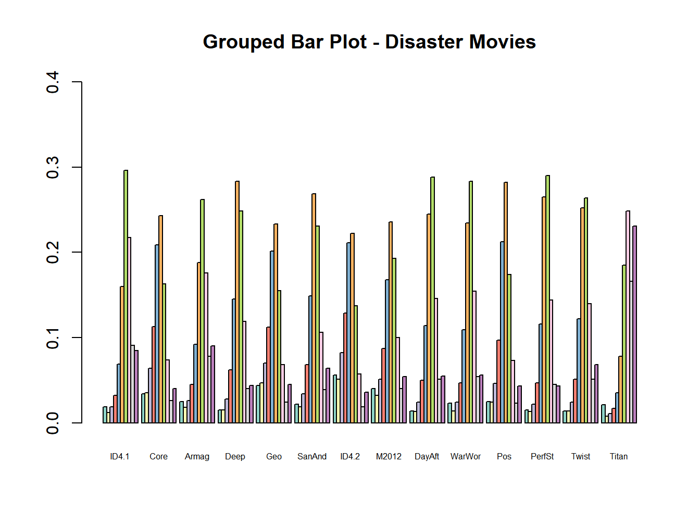
Figure 2.12: Stacked Bar Chart for user reviews (1-10) of 14 Disaster Movies on IMDB
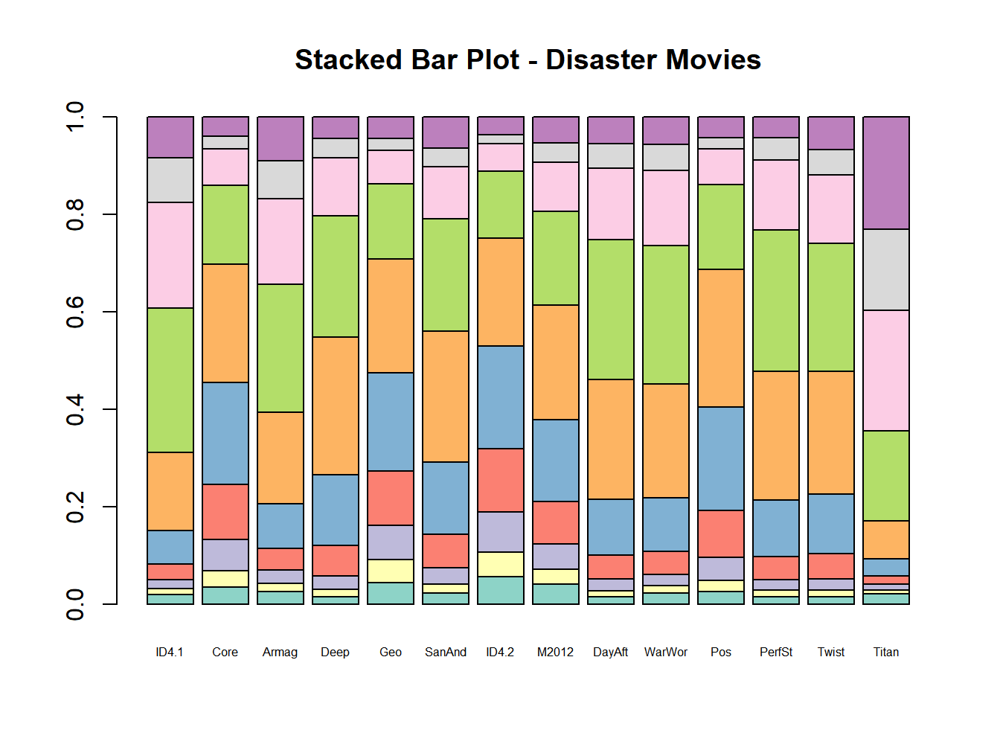
Figure 2.13: Cluster Bar Chart for user reviews (1-10) of 14 Disaster Movies on IMDB
\[\nabla \]
When the independent variable is categorical (nominal or ordinal) and the response (dependent variable) is numeric, we can construct side-by-side histograms and density plots, or box plots (see Figure 2.4 for side-by-side box plots). Histograms and densities can also be placed into single plots with different colors or patterns as in Figure 2.14.
## Runner Gender Place Seconds mph
## 1 1 M 1830 17375 5.432374
## 2 2 F 2475 20988 4.497213## Scale for fill is already present.
## Adding another scale for fill, which will replace the existing scale.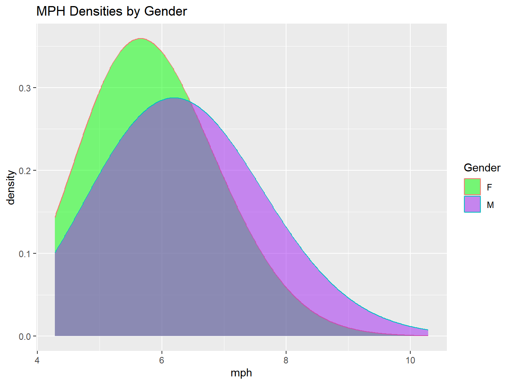
Figure 2.14: Density Plots of Velocities at Rock and Roll Marathon 2015 (mph)
When two variables (labeled \(x\) and \(y\)) are both numeric, one numeric descriptive measure that is widely reported is the correlation between the two variables. Technically, this is called the Pearson product moment coefficient of correlation. This measure is only for the linear, or “straight line” relation between the two variables. Unlike in Regression (described later), the variables are not necessarily (but can be) identified as an independent and or dependent variable. The formula for this measure (population and sample) are given below.
\[ \mbox{Population Correlation: } \rho = \frac{ \frac{1}{N}\sum_{i=1}^N\left(x_i-\mu_x\right)\left(y_i-\mu_y\right)}{\sigma_x\sigma_y}= \frac{\sum_{i=1}^N\left(x_i-\mu_x\right)\left(y_i-\mu_y\right)}{\sqrt{\sum_{i=1}^N\left(x_i-\mu_x\right)^2\sum_{i=1}^N\left(y_i-\mu_y\right)^2}} \]
\[ \mbox{Sample Correlation: } r = \frac{\frac{1}{n-1}\sum_{i=1}^n\left(x_i-\overline{x}\right)\left(y_i-\overline{y}\right)}{s_xs_y}= \frac{\sum_{i=1}^n\left(x_i-\overline{x}\right)\left(y_i-\overline{y}\right)}{\sqrt{\sum_{i=1}^n\left(x_i-\overline{x}\right)^2\sum_{i=1}^n\left(y_i-\overline{y}\right)^2}} \]
A scatterplot is a plot where each case’s \(x\) and \(y\) pairs are plotted in two dimensions. When one variable is the dependent variable, it is labeled \(y\), and plotted on the vertical axis and the independent variable is labeled \(x\), plotted on the horizontal axis. We are interested in any pattern (linear or possibly nonlinear, or none at all) between the variables. The formulas for the (ordinary) least squares regression line relating \(y\) to \(x\) are given below.
\[ \hat{y} = \hat{\beta}_0 + \hat{\beta}_1 x \qquad \qquad \hat{\beta}_1 = \frac{\sum_{i=1}^n\left(x_i-\overline{x}\right)\left(y_i-\overline{y}\right)}{\sum_{i=1}^n\left(x_i-\overline{x}\right)^2} \qquad \qquad \hat{\beta}_0 = \overline{y} - \hat{\beta}_1 \overline{x} \]
\[SSE=\sum_{i=1}^n\left(y_i-\hat{y}_i\right)^2 = \sum_{i=1}^n\left(y_i-\left(\hat{\beta}_0 + \hat{\beta}_1 x_i\right)\right)^2 \]
Example 2.12: Relation Between Temperature and Water Evaporation
An experiment was conducted that observed the temperature \(x\) (fahrenheit) and water evaporation \(y\) (grains of water) with measurements taken at 8:00AM daily from 11/10/1692-11/09/1693 (Halley 1694).
The plot of the data and the linear regression equation is given in Figure 2.15. The correlation and regression equation were obtained using the cor and lm functions.
evap <- read.table("evap.dat",
header=F,
col.names=c("day", "dayEvap", "dayTemp", "dayPres", "mdate"))
head(evap,2)## day dayEvap dayTemp dayPres mdate
## 1 1 21 30 29.7 10NOV1692
## 2 2 32 27 29.7 11NOV1692## Compute correlation coefficient (Pearson) between evaporation and temp
cor(evap$dayEvap, evap$dayTemp)## [1] 0.7961281##
## Call:
## lm(formula = dayEvap ~ dayTemp, data = evap)
##
## Residuals:
## Min 1Q Median 3Q Max
## -31.415 -8.127 -1.476 8.858 48.418
##
## Coefficients:
## Estimate Std. Error t value Pr(>|t|)
## (Intercept) 23.94556 1.09028 21.96 <2e-16 ***
## dayTemp 0.62879 0.02509 25.07 <2e-16 ***
## ---
## Signif. codes: 0 '***' 0.001 '**' 0.01 '*' 0.05 '.' 0.1 ' ' 1
##
## Residual standard error: 13.05 on 363 degrees of freedom
## Multiple R-squared: 0.6338, Adjusted R-squared: 0.6328
## F-statistic: 628.3 on 1 and 363 DF, p-value: < 2.2e-16## Analysis of Variance Table
##
## Response: dayEvap
## Df Sum Sq Mean Sq F value Pr(>F)
## dayTemp 1 107023 107023 628.32 < 2.2e-16 ***
## Residuals 363 61831 170
## ---
## Signif. codes: 0 '***' 0.001 '**' 0.01 '*' 0.05 '.' 0.1 ' ' 1plot(evap$dayEvap ~ evap$dayTemp, pch=16, col="red", cex=0.7,
main="Daily Water Evaporation (y) and Temperature (x)",
ylab="Water Evaporation", xlab="Temperature")
abline(mod1, col="blue", lwd=2)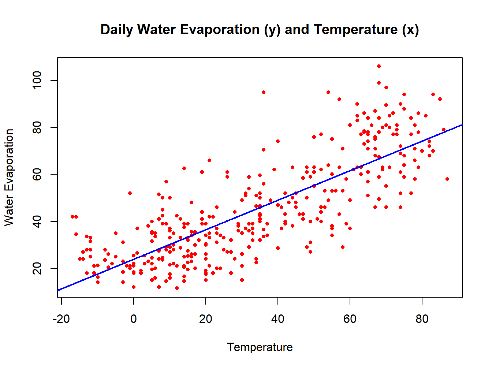
Figure 2.15: Temperature (X) and Water Evaporation (Y) - Edmund Halley Observations 1692/1693
The sample correlation is \(r =0.7691\) and the fitted linear regression equation is \(\hat{y}=23.9456+0.6288x\).
\[ \nabla \]
Example 2.13: Heights of Adult Children and Their Parents
Francis Galton measured many aspects of humans, plants, and animals during the late 1800s, some of which were presented in table form in his book Natural Inheritance. One analysis that had been published previously (Galton 1886) introduced the notion of linear regression. Galton reported the heights of adult children and their “mid-parents” which was the average height of the parents. Galton multiplied female heights for the adult children and the mothers by 1.08 to make the female and male heights”comparable.” The individual data were obtained from Galton’s notebooks and are available due to Professor James A. Hanley (Hanley 2004).
Histograms of the male and (unscaled) female heights is given in Figure 2.16. The histograms are approximately mound-shaped within gender. The plot of adult child height versus mid-parent height (with female heights scaled by 1.08) is given in Figure 2.17. The plot contains three lines, which are described below.
## Family Father Mother Gender Height Kids MidParent AdltChld
## 1 1 78.5 67 M 73.2 4 75.43 73.200
## 2 1 78.5 67 F 69.2 4 75.43 74.736##
## Call:
## lm(formula = AdltChld ~ MidParent, data = galton)
##
## Residuals:
## Min 1Q Median 3Q Max
## -9.4947 -1.4779 0.0995 1.5175 9.1262
##
## Coefficients:
## Estimate Std. Error t value Pr(>|t|)
## (Intercept) 18.76698 2.84062 6.607 6.74e-11 ***
## MidParent 0.72906 0.04102 17.772 < 2e-16 ***
## ---
## Signif. codes: 0 '***' 0.001 '**' 0.01 '*' 0.05 '.' 0.1 ' ' 1
##
## Residual standard error: 2.233 on 896 degrees of freedom
## Multiple R-squared: 0.2606, Adjusted R-squared: 0.2598
## F-statistic: 315.9 on 1 and 896 DF, p-value: < 2.2e-16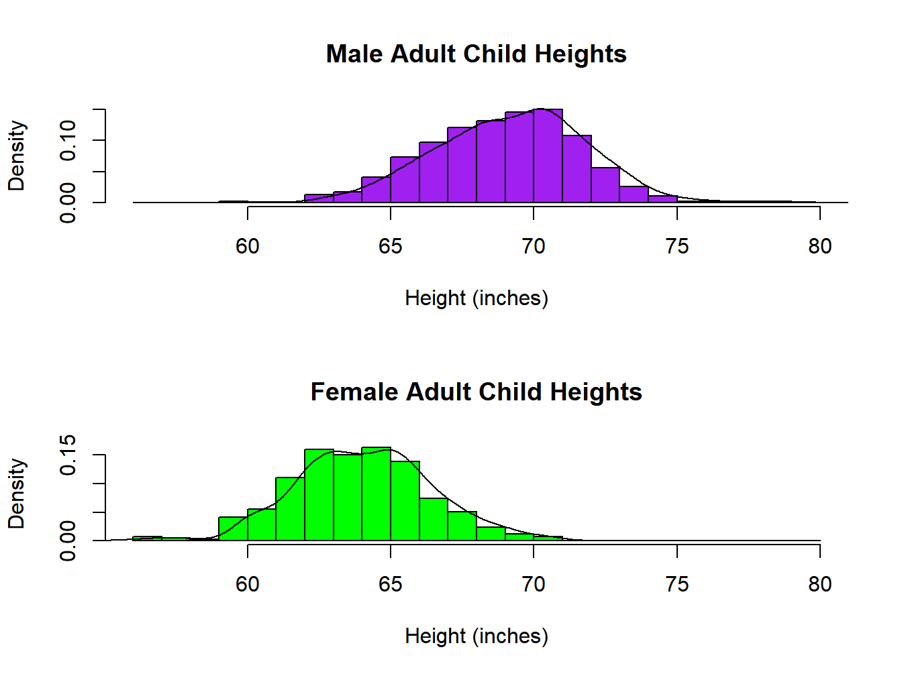
Figure 2.16: Histograms of Adult Male and Female Children Heights - Frances Galton Measurements
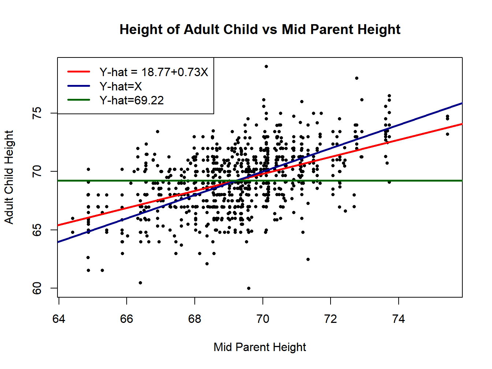
Figure 2.17: Adult Chidren Scaled Heights (Y) versus Midparents Height (X) and Regression Line
- Steepest: Line of equality \(\hat{y}=x\), which represents the case with the average adult child height equaling the mid-parent height.
- Flat: Constant line \(\hat{y}=\overline{y}\), which represents the case with the average adult child height equaling the average mid-parent height (no association between adult child and mid-parent height).
- Middle: Least squares regression line \(\hat{y} = 18.77 + 0.73x\)
The fact the least squares line falls between the two reference lines showed that adult children of tall parents tended to be tall, but not as tall on average as their parents. Similarly, adult children of short parents tended to be short, but not as short on average as their parents. Galton referred to this phenomenon as “regression to mediocrity.” Today it is more widely referred to as “regression to the mean.”
\[ \nabla \]
We often are interested in relationships among more than two numeric variables. Scatterplot and correlation matrices can be constructed to demonstrate the bivariate association of all pairs of variables.
Example 2.14: Compressive Strength and Microfabric Properties of Amphibolites
A study reported the relationship between Uniaxial Compression Strentgh (UCS) and 8 predictor variables including: percent hornblende (hb), grain size (gs), and grain area (ga) (Ali, Guang, and Ibrahim 2014). A simple scatterplot matrix of plots of all pairs of these four variables is given in Figure 2.18. The correlation matrix is given along with R code below. Note that this can be extended to all pairs of variables, the plot just gets very difficult to focus on particular pairs of variables.
## sample_id UCS quartz plag kfds hb gs ga sf ar
## 1 1 100.6 40.3 9.98 17.01 21.57 0.031 754.4 0.594 0.630
## 2 2 112.0 47.1 8.50 15.00 23.00 0.025 490.6 0.612 0.612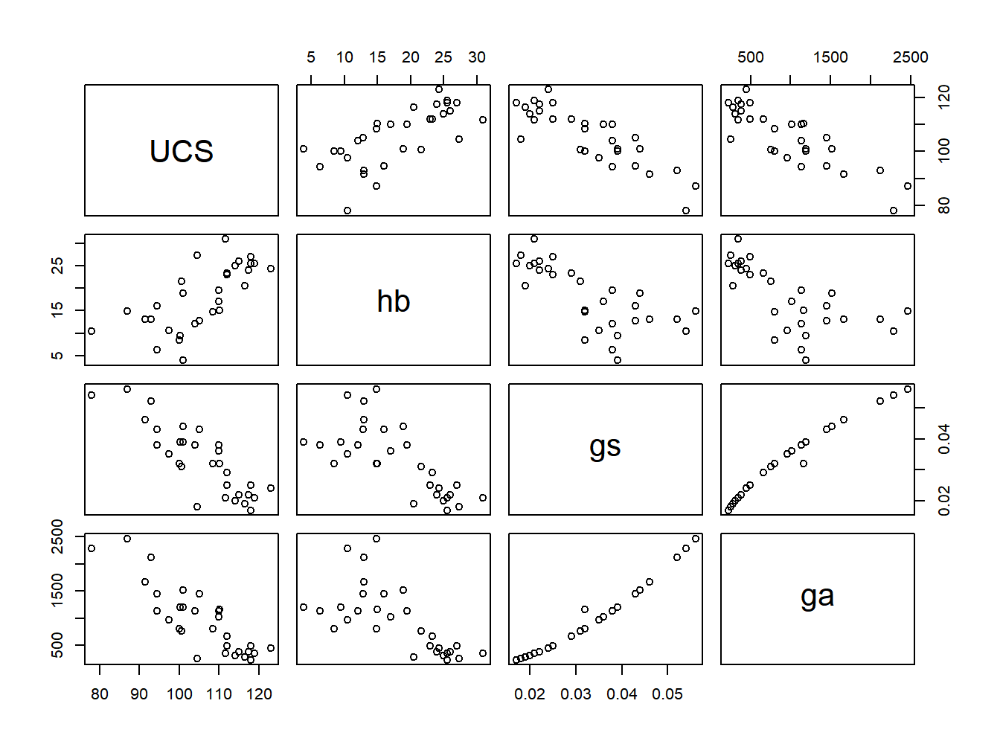
Figure 2.18: Scatterplot Matrix for all pairs among 4 rock strength variables
## UCS hb gs ga
## UCS 1.0000000 0.6935996 -0.8535317 -0.8537215
## hb 0.6935996 1.0000000 -0.7200409 -0.6641698
## gs -0.8535317 -0.7200409 1.0000000 0.9845240
## ga -0.8537215 -0.6641698 0.9845240 1.0000000\[ \nabla \]
When data are highly skewed, individual cases have the ability to have a large impact on the correlation coefficient. An alternative measure that is widely used is the Spearman Rank Correlation Coefficient (aka Spearman’s rho). This coefficient is computed by ranking the \(x\) and \(y\) values from 1 (smallest) to \(n\) or \(N\) (largest), and applying the formula for Pearson’s coefficient to the ranks. This way, extreme \(x\) or \(y\) values do not have as large of an impact on the coefficient. Also, in many situations, the natural measurements are the rankings or ordering themselves.
Example 2.15: NASCAR Start and Finish Positions 1975-2003
A study of NASCAR races for the years 1975-2003, considered the correlation between starting and finishing positions among drivers for the 898 races during those seasons (Winner 2006). As the data were orderings, it was natural to compute the correlation using Spearman’s rank correlation. The summary of the correlations is given below, and a density plot and histogram are given in Figure 2.19.
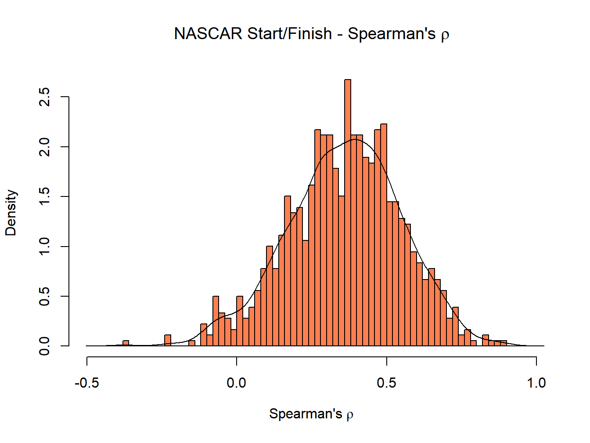
Figure 2.19: NASCAR Races 1975-2003 - Spearman rank correlation coefficient for start/finish positions
\[ \nabla \]
Many series (particularly when measured over time) display spurious correlations, particularly when both variables tend to increase or decrease together with no causal reason that the two (or more) variables move in tandem. For instance, the correlation between annual U.S. internet users (per 100 people) and electrical power consumption (kWh per capita) for the years 1994-2010 is .7821 (data source: The World Bank). Presumably increasing internet usage isn’t leading to large increases in electrical consumption, or vice versa.